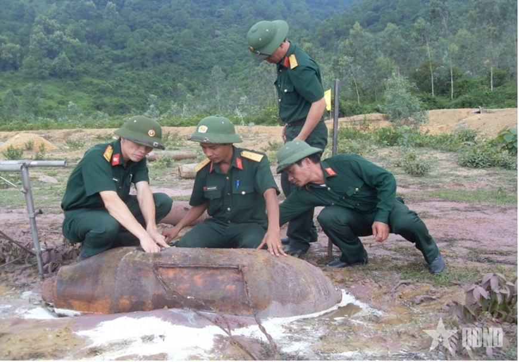

Bom đạn được ném xuống Việt Nam trong những năm chiến tranh.
HÀNH TRÌNH LỊCH SỬ VIỆT NAM
ĐẤT NƯỚC
THỐNG NHẤT
Từ ngày đất nước thống nhất đến bước ngoặt Đổi mới.
Khám phá hành trình ↓30.04.1975HÀNH TRÌNH 11 NĂM
1975
 Đời sống xã hội trong những năm đầu sau thống nhất.
Đời sống xã hội trong những năm đầu sau thống nhất.MỘT KỶ NGUYÊN MỚI
Từ niềm vui thống nhất đến thử thách kiến thiết đất nước.
Sau đại thắng mùa Xuân năm 1975, Việt Nam bước vào kỷ nguyên độc lập, thống nhất và cùng đi lên chủ nghĩa xã hội. Đất nước bắt đầu lại trong điều kiện cơ sở vật chất bị tàn phá, nền kinh tế nghèo nàn và đời sống nhân dân còn nhiều khó khăn.
Đọc hồ sơ mở đầu ↗
1975-1981
Một đất nước bắt đầu lại từ lao động và sản xuất.
Sau thống nhất, ổn định đời sống và khôi phục sản xuất là nhiệm vụ cấp thiết. Những thử nghiệm khoán sản phẩm trong nông nghiệp đã tạo thêm động lực cho người lao động.
Đọc về Chỉ thị 100 ↗THÁNG 12.1986
Đại hội VI mở ra một cách nghĩ mới.
Đường lối Đổi mới toàn diện được xác lập từ yêu cầu của thực tiễn và đời sống nhân dân.
Đọc mốc Đại hội VI ↗
ĐIỂM XUẤT PHÁT
Những con số
không thể lãng quên.
Một giai đoạn vừa khôi phục, vừa tìm kiếm con đường phát triển phù hợp.
BA LỚP CỦA LỊCH SỬ
Thách thức.
Chủ trương.
Kết quả.
Thách thức
Hậu quả chiến tranh nặng nề, sản xuất trì trệ, thiếu lương thực và những cuộc chiến đấu bảo vệ biên giới.
Chủ trương
Khôi phục kinh tế, hoàn thành thống nhất Nhà nước, xây dựng cơ sở vật chất và bảo vệ chủ quyền.
Kết quả
Những thử nghiệm từ thực tiễn đã góp phần hình thành tư duy mới, mở đường cho Đại hội VI.
HỌC BẰNG CÁCH CHƠI
Nếu bạn đứng trước
một quyết định lịch sử?
Thử sắp xếp các cột mốc và xem lựa chọn của bạn dẫn đến đâu.
Vào mini game ↗
DÒNG CHẢY 1975-1986